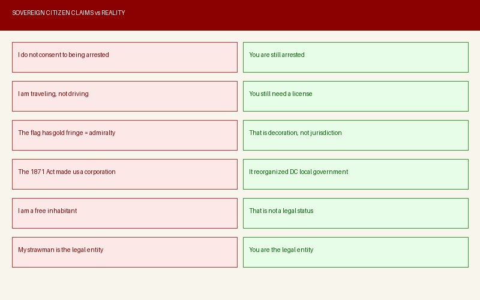

The Theory That Gets People Killed
The claim goes like this: in 1871, Congress secretly turned the United States into a corporation controlled by international banking interests. There are supposedly "two constitutions," one real and one fake. Every president since 1871 has been illegitimate. American citizens are not actually citizens but corporate property identified by their birth certificates. The entire legal system is a fraud. You do not have to pay taxes, register your car, or carry a driver's license because none of it is real.
If you have spent any time on Truth Social, Telegram, TikTok, or any patriot community online, you have seen this theory. It gets shared confidently by people who have never read the law they are citing. And here is the part that should stop every one of them in their tracks: this theory was invented by a white supremacist named William Potter Gale, who founded the Posse Comitatus movement in the 1970s. The FBI classifies that movement as a domestic terrorist threat. The theory they are sharing as "patriotic truth" was created by a racist who wanted to justify not paying taxes and not recognizing the authority of a government that had just given Black Americans civil rights.

Watch: Sovereign Citizens in Court
Before we get into the history, watch what happens when people actually try to use sovereign citizen arguments in a real courtroom. These are the same theories promoted in the conspiracy industry, tested against actual law.
Read the Actual Law. It Takes Two Minutes.
Here is the actual text from Section 1 of the District of Columbia Organic Act of 1871, approved February 21, 1871. This is the law that sovereign citizens claim turned America into a corporation. Read it:
"All that part of the territory of the United States included within the limits of the District of Columbia be, and the same is hereby, created into a government by the name of the District of Columbia, by which name it is hereby constituted a body corporate for municipal purposes, and may contract and be contracted with, sue and be sued, plead and be impleaded, have a seal, and exercise all other powers of a municipal corporation not inconsistent with the Constitution and laws of the United States and the provisions of this act."
16 Stat. 419, Section 1 (February 21, 1871)
Read those three words again: "for municipal purposes." That is the entire debunk in three words. Try this right now: Google the name of your city followed by "municipal corporation." Go ahead. Your hometown is a municipal corporation. So is every city and town in America. It means the city can enter contracts, be sued in court, and provide public services. When sovereign citizens see the word "corporation" in the 1871 Act and conclude that America became a business owned by bankers, they are making the same mistake as someone who sees the word "bank" in "river bank" and concludes the river is controlled by Chase Manhattan.
What Congress actually needed in 1871 was simple: pave Pennsylvania Avenue, install gas lines, and manage sewage. The separate governments of Washington, Georgetown, and the surrounding county were too fragmented to coordinate the work. So Congress combined them into one unified city government with the legal authority to sign contracts and get the roads fixed. That is what the 1871 Act did. It was a plumbing and paving bill.
The U.S. Supreme Court confirmed this in District of Columbia v. Thompson Co., 346 U.S. 100 (1953), describing the Act as constituting D.C. "a body corporate for municipal purposes" with "all of the powers of a municipal corporation." Not a business corporation. Not a secret government. A city. The same legal structure as the city you live in right now.
The Act applied only to the ten-mile square of the District of Columbia. It did not alter the Constitution. It did not change the federal government. It did not replace the Republic. It gave a city the legal authority to fix its roads. And a white supremacist in the 1970s turned that into a theory that has now gotten police officers killed.
The Capitalization Trick
One of the strangest parts of sovereign citizen ideology is the belief that how your name is capitalized on legal documents determines whether you are a free person or corporate property. The theory goes like this: "John Doe" (normal capitalization) is the real, living person. "JOHN DOE" (all capitals) is a secret corporate entity, a "straw man" created by the government when your birth certificate was filed. Sovereign citizens claim that every time a court document, tax form, or driver's license prints your name in all capitals, the government is addressing the corporate straw man, not you. Therefore, they argue, you are not bound by any legal obligation addressed to "JOHN DOE" because that is not actually you.
This is complete nonsense. Government databases and legal documents use all-capital formatting because that is standard data entry practice. The IRS prints your name in capitals because their computer system does. The court prints your name in capitals because court filing standards require it for readability. Your driver's license uses capitals because the DMV's system does. There is no legal distinction between "John Doe" and "JOHN DOE." Courts have rejected this argument hundreds of times. Not once has a judge looked at the capitalization of a defendant's name and concluded the court lacked jurisdiction.
Derek Johnson uses this same framework. As The Ghost documented in his investigation, Johnson distinguishes "United States" from "UNITED STATES" and claims specific capitalization carries legal significance. This traces directly back to sovereign citizen doctrine from the 1970s and 1980s. Johnson did not invent this argument. He inherited it from the same white supremacist movement that produced the 1871 theory. He just repackaged it with military jargon and sold it to veterans who had no way of knowing they were consuming sovereign citizen ideology.
Where This Theory Really Comes From
This is the part they don't tell you on TikTok.
The "1871 theory" traces directly back to the Posse Comitatus movement, a white supremacist group founded in the early 1970s by William Potter Gale, a man known for his racist, antisemitic, and anti-government views. The group believed county sheriffs were the supreme legal authority and that the federal government was illegitimate.
The "sovereign citizen" movement grew out of this, adopting the idea that the federal government had been secretly replaced by a corporate entity. They latched onto the 1871 Act because it used the word "corporation," ignoring that it meant "city government," not "business corporation."
Legal scholars, including Kermit Roosevelt from the University of Pennsylvania, have thoroughly debunked this interpretation. Politifact rated it False. The Southern Poverty Law Center tracks sovereign citizens as an extremist ideology. Melody Jennings (Coach Mel) wrote an entire book debunking this specific theory called "The Corporation Illusion: Unmasking 1871." And yet the theory keeps spreading on social media because it sounds like it could be true to someone who has never read the one-page law it is based on.
How Q Followers Recycled a White Supremacist Theory
In one of the more ironic turns in conspiracy theory history, followers of Q, many of whom consider themselves patriots, adopted a theory created by white supremacists and ran with it. Some even predicted that Trump would be re-inaugurated as "the 19th president" on March 4, 2021, based on the idea that every president since 1871 was illegitimate.
March 4, 2021 came and went. Nothing happened. But instead of abandoning the theory, they just moved the goalposts, because that's what conspiracy theories do.
What the 1871 Act Actually Did
| What They Claim | What Actually Happened |
|---|---|
| The U.S. became a corporation owned by bankers | D.C.'s local government was reorganized into a "municipal corporation" (legal term for city government) |
| A "second Constitution" replaced the original | The Act didn't touch the Constitution. It only affected D.C. governance |
| All citizens became corporate property via birth certificates | The Act combined Washington, Georgetown, and surrounding areas into one city government |
| Every president since 1871 is illegitimate | Congress actually abolished the territorial government in 1874 and reverted D.C. to direct Congressional control |
| Trump will be the "19th president" under the real Constitution | March 4, 2021 came and went. Nothing happened. |
How a White Supremacist Theory Reached Your Feed
1970s: Posse Comitatus
White supremacist William Potter Gale creates the movement. Anti-government, racist, antisemitic. Claims federal government is illegitimate.
1980s-2000s: Sovereign Citizens
Movement grows. Latches onto the 1871 Act. "Municipal corporation" becomes "secret corporate takeover." Tax evasion and paper terrorism spread.
2020: Q Movement Adopts It
The racist origins are stripped away. The theory is repackaged as "patriotic truth." Trump will be the "19th president." March 4, 2021 prediction fails.
2021-Present: TikTok & Social Media
Short-form videos spread the theory to millions who have no idea about its white supremacist origins. It "sounds true" so it gets shared without verification.
Purpose
Prior to 1871, Washington D.C. was governed through a complicated system of locally elected officials, federally appointed commissions, and Congressional oversight. The Organic Act aimed to streamline the territorial government.
Provisions
- Revoked individual charters of Washington and Georgetown
- Combined them into a single territorial government
- Established new government structure (governor, legislative assembly, board of public works)
- Congress retained overriding authority and veto power
Impact
- Centralized governance under one unified territorial government
- Led to period of political corruption and excessive spending
- Congress abolished the territorial government in 1874 and reverted to direct Congressional control
The Real History: Why This Law Was Passed
To understand the 1871 Act, you need to understand what America was going through when it was written. The country had just fought a civil war that killed over 600,000 Americans. Slavery had been abolished. Four million people who had been legally classified as property were now citizens. And the federal government was trying to rebuild a nation while protecting those new citizens from the same people who had enslaved them. The 1871 Act was part of that effort. It was not a corporate takeover. It was Reconstruction. And the theory that attacks it was invented by people who opposed everything Reconstruction stood for.
- Congress enacted Enforcement Acts 1870–1871, including the Ku Klux Klan Act
The 1871 Act was a vital component of Reconstruction legislative efforts to codify freedom, citizenship, voting rights, and equal protection for African Americans in the aftermath of slavery's abolition.
Why This Is Dangerous, Not Just Wrong
Sovereign citizen ideology isn't just factually wrong; it's dangerous. The FBI classifies sovereign citizens as a domestic terrorist threat for good reason. This isn't theoretical. People have been killed.
Real-World Consequences
- Violence against law enforcement: On May 20, 2010, sovereign citizen Jerry Kane and his 16-year-old son Joseph were pulled over on Interstate 40 in West Memphis, Arkansas. The teenager jumped out of the minivan with an AK-47 and murdered Sergeant Brandon Paudert (the police chief's son, shot 14 times) and Officer Bill Evans (shot 8 times). Both died on the highway. The Kanes were killed hours later in a Walmart parking lot shootout. Jerry Kane had been running "debt elimination seminars" based on sovereign citizen ideology. A father radicalized his own child into a murderer over a conspiracy theory about a municipal zoning law from 1871.
- Tax fraud: Sovereign citizens file fraudulent tax documents, bogus liens against government officials, and fake financial instruments, costing taxpayers millions.
- Paper terrorism: Filing frivolous lawsuits and bogus legal documents to overwhelm courts and harass public officials.
- Armed standoffs: Multiple incidents of sovereign citizens barricading themselves and threatening violence when confronted by law enforcement.
What Actually Happens When You Try This
If you are wondering what happens when someone actually tries sovereign citizen arguments in real life, here is the pattern. It repeats every single time with zero exceptions.
You get pulled over for a traffic violation. You tell the officer you are "traveling, not driving" and therefore do not need a license. The officer asks for your license again. You cite the Articles of Confederation, the Uniform Commercial Code, or the 1871 Act. The officer calls for backup. You tell the backup officer that you do not consent to being detained. You are removed from the vehicle. You are placed in handcuffs. Your car is towed. You are taken to jail. You appear before a judge. You tell the judge that the court has no jurisdiction over you because you are a "free inhabitant" or a "sovereign." The judge tells you that you are wrong. You are convicted. You pay the fine. If you refused long enough, you serve time. At no point in this process does anyone say "oh, you cited the 1871 Act, you are free to go." It has never happened. Not once. Not ever. The courtroom videos at the top of this chapter show exactly how it goes.
The Irony They Cannot See
Here is the part that should make every sovereign citizen stop and think, if they are still capable of it. They claim to love America. They wave the flag. They call themselves patriots. And their entire ideology is built on rejecting every institution that America is made of. They reject the courts. They reject the police. They reject the tax system. They reject driver's licenses, vehicle registration, and the legal authority of every elected official from the county sheriff to the President. They reject the legitimacy of every law passed since 1871, which means they reject the 13th, 14th, 15th, 19th, and 26th Amendments, the ones that abolished slavery, guaranteed equal protection, gave Black Americans the vote, gave women the vote, and gave 18-year-olds the vote. A person cannot love America while rejecting everything America is built on. That is not patriotism. That is the opposite of patriotism wearing a flag as a costume.
What the Internet Did
The sovereign citizen theory, the devolution theory, and the law of war claims are all symptoms of the same disease: the internet turned misinformation into an industry.
Before social media, sovereign citizen ideology was confined to fringe militia groups and white supremacist newsletters. The internet did three things:
- Stripped the white supremacist branding. The 1871 theory was repackaged without the racist origins, making it palatable to patriot communities who would have rejected it if they knew where it came from.
- Made it profitable. Content creators discovered that conspiracy theories drive engagement. More engagement means more subscribers, more donations, more ad revenue. Truth became secondary to clicks.
- Created echo chambers. Platforms like Telegram, TruthSocial, and Rumble allow these theories to circulate unchallenged. Anyone who pushes back gets banned from the group. The result: millions of Americans consuming misinformation in sealed information environments.
Devolution, the law of war theory, and sovereign citizen ideology are just a few examples of what the internet has done to our nation. Well-meaning patriots have been led astray by content creators who profit from their confusion. The antidote isn't more conspiracy theories. It's actual education, verified sources, and the willingness to question anyone who claims to have secret knowledge, especially when they're charging you for it.
Watch: Sovereign Citizens in Action
Watch what happens when sovereign citizen ideology meets reality. These are real encounters showing real consequences of believing you can opt out of the legal system because of a conspiracy theory about an 1871 law.
Sources & Further Reading
- Politifact: Fact-check on the 1871 law
- SPLC: Sovereign Citizens Movement
- GWU Program on Extremism
- District of Columbia Organic Act of 1871 (Full Text, PDF)
- District of Columbia v. Thompson Co., 346 U.S. 100 (1953)
- D.C. Code 1-102: District Created Body Corporate for Municipal Purposes
- 2010 West Memphis Police Shootings (Wikipedia)
- Melody Jennings: "The Corporation Illusion: Unmasking 1871"